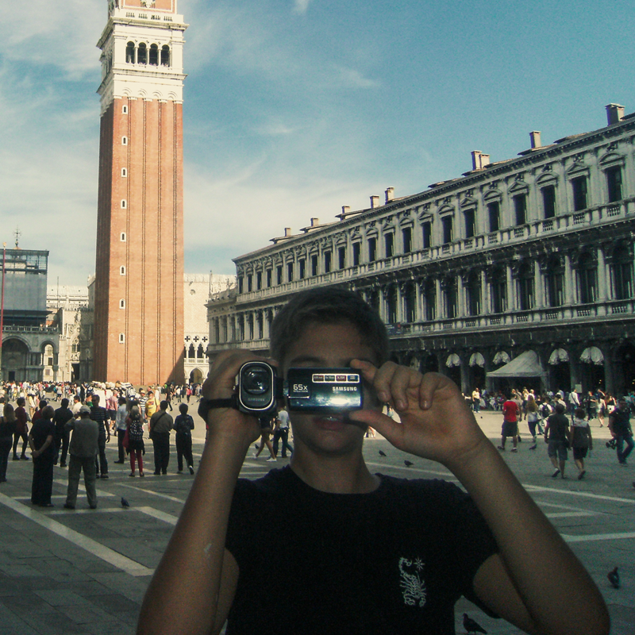
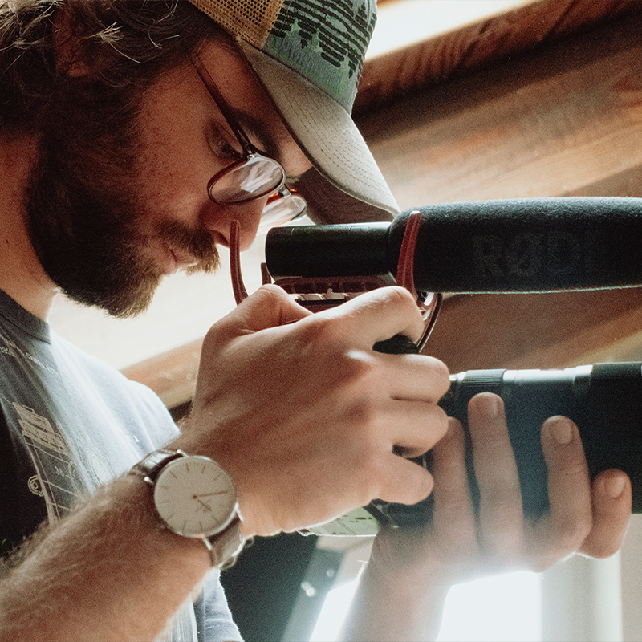
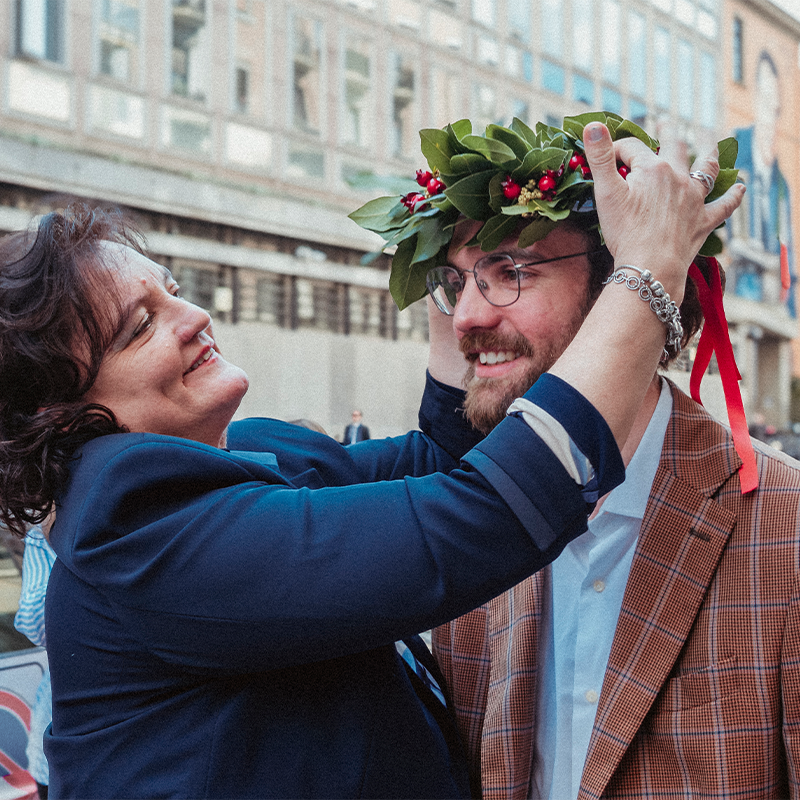
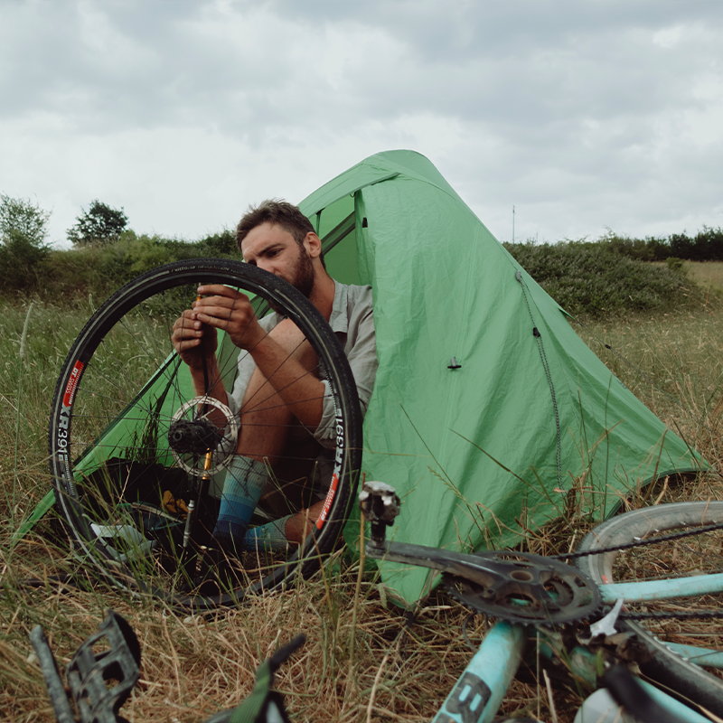
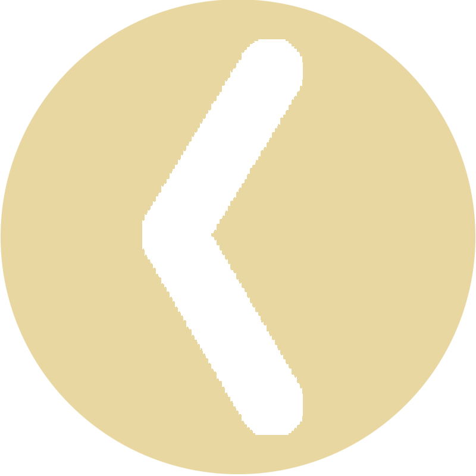
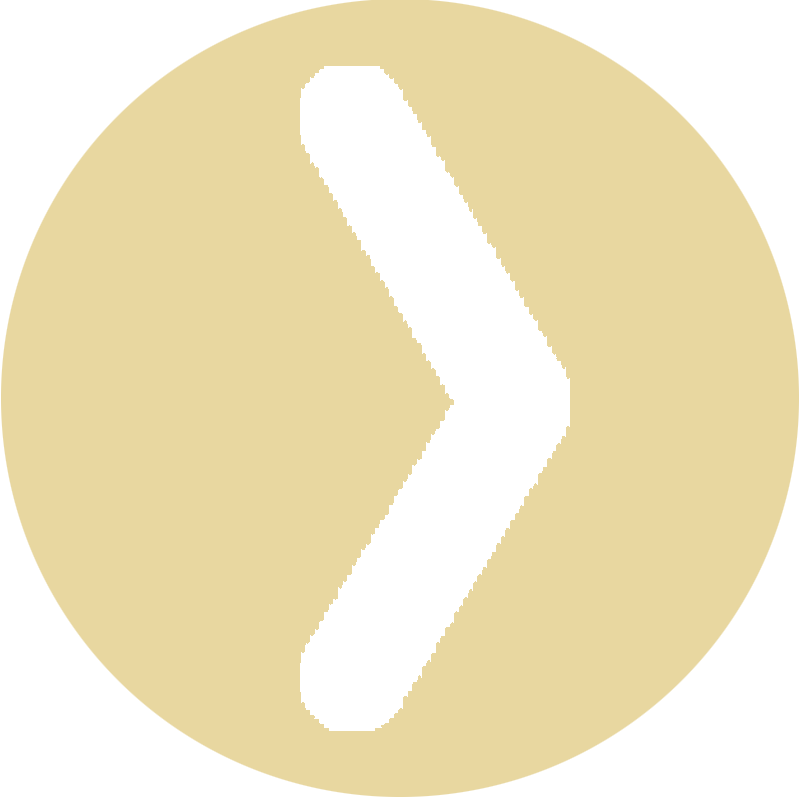

Mi piace pacioccare con la telecamera da quando ho memoria. Fin da piccolo la rubavo a mio padre per documentare le vacanze di famiglia. Una volta a casa, cercando di padroneggiare Windows Movie Maker, provavo a fare dei video riassuntivi. Crescendo, e abbandonando Movie Maker, quel gioco è diventato un lavoro.

Dopo il liceo artistico, ho frequentato il corso da “Tecnico di produzione video” della Scuola APM di Saluzzo. Un anno intensivo di regia, montaggio, fotografia e audio che ha consolidato le mie basi tecniche e artistiche. L’esperienza è culminata con uno stage da Smart Factory, casa di produzione con cui collaboro ancora oggi. Dal 2021 opero come libero professionista, collaborando stabilmente con case di produzione torinesi e realtà del saluzzese.

Parallelamente alla macchina da presa, tra il 2021 ed il 2024 ho portato avanti la mia formazione accademica laureandomi in Filosofia Teoretica con una tesi sul rapporto tra l’etica kantiana ed il socialismo. Perchè filosofia? Bah... potrebbe essere il tema di un intero corso all’Università. Diciamo che, se la filosofia studia la realtà, e il cinema ha la pretesa di rappresentarla; allora la filosofia mi sembrava il miglior mezzo per raccontare consapevolmente il mondo intorno a me.

Certo la realtà non basta studiarla bisogna viverla! Così, nel maggio 2025, dopo la laurea, sono partito in bicicletta per un viaggio di due mesi e 5.000 km, pedalando fino ad Atene e risalendo l'Italia da Bari a casa. Un’avventura che presto diventerà una serie sul mio canale YouTube. Videomaker, filosofo, e pure ciclista... forse era meglio non mettere questa pagina! Se invece non hai paura di una citazione kantiana, scrivimi, e pensiamo insieme la tua idea!


Hai un progetto in mente? Parliamone
prometto di non citare Kant nella prima mail:
edoardo.blua@gmail.com
Scarica
CV